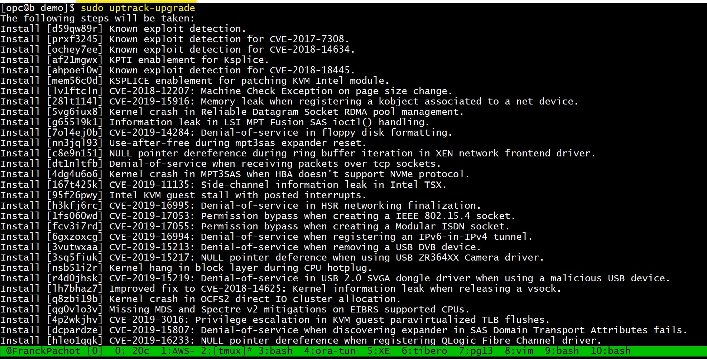

This was first published on https://www.dbi-services.com/blog/always-free-always-up-tmux-in-the-oracle-cloud-with-ksplice-updates/ (2020-05-14)
Republishing here for new followers. The content is related to the versions available at the publication date.
.
I used to have many VirtualBox VMs on my laptop. But now, most of my labs are in the Cloud. Easy access from everywhere.
There’s the Google Cloud free VM which is not limited in time (I still have the 11g XE I’ve created 2 years ago running there) being able to use 40% of CPU with 2GB of RAM:
top - 21:53:10 up 16 min, 4 users, load average: 9.39, 4.93, 2.09
Tasks: 58 total, 2 running, 56 sleeping, 0 stopped, 0 zombie
%Cpu(s): 12.9 us, 8.2 sy, 0.0 ni, 12.6 id, 0.0 wa, 0.0 hi, 0.3 si, 66.0 st
GiB Mem : 1.949 total, 0.072 free, 0.797 used, 1.080 buff/cache
GiB Swap: 0.750 total, 0.660 free, 0.090 used. 0.855 avail Mem
This is cool, always free but I cannot ssh to it: only accessible with Cloud Shell and it may take a few minutes to start.
I also use an AWS free tier but this one is limited in time 1 year.
top - 19:56:11 up 2 days, 13:09, 2 users, load average: 1.00, 1.00, 1.00
Tasks: 110 total, 2 running, 72 sleeping, 0 stopped, 0 zombie
%Cpu(s): 12.4 us, 0.2 sy, 0.0 ni, 0.0 id, 0.0 wa, 0.0 hi, 0.0 si, 87.4 st
GiB Mem : 1.0 total, 0.1 free, 0.7 used, 0.2 buff/cache
GiB Swap: 0.0 total, 0.0 free, 0.0 used. 0.2 avail Mem
A bit more CPU throtteled by the hypervisor and only 1GB of RAM. However, I can create it with a public IP and access it though SSH. This is interesting especially to run other AWS services as the AWS CLI is installed here in this Amazon Linux. But limited in time and in credits.
Not limited in time, the Oracle Cloud OCI free tier allows 2 VMs with 1GB RAM and 2 vCPUs throttled to 1/8:
top - 20:01:37 up 54 days, 6:47, 1 user, load average: 0.91, 0.64, 0.43
Tasks: 113 total, 4 running, 58 sleeping, 0 stopped, 0 zombie
%Cpu(s): 24.8 us, 0.2 sy, 0.0 ni, 0.0 id, 0.0 wa, 0.0 hi, 0.2 si, 74.8 st
KiB Mem : 994500 total, 253108 free, 363664 used, 377728 buff/cache
KiB Swap: 8388604 total, 8336892 free, 51712 used. 396424 avail Mem
PID USER PR NI VIRT RES SHR S %CPU %MEM TIME+ COMMAND
18666 opc 20 0 112124 748 660 R 25.2 0.1 6:20.18 yes
18927 opc 20 0 112124 700 612 R 24.8 0.1 0:06.53 yes
This is what I definitlely choose as a bastion host for my labs.
I run mainly one thing here: TMUX. I have windows and panes for all my work and it stays there in this always free VM that never stops. I just ssh to it and ‘tmux attach’ and I’m back to all my terminals opened.
This, always up, with ssh opened to the internet, must be secured. And as I have all my TMUX windows opened, I don’t want to reboot. No problem: I can update the kernel with the latest security patches without reboot. This is Oracle Linux and it includes Ksplice.
My VM is up since February:
[opc@b ~]$ uptime
20:15:09 up 84 days, 15:29, 1 user, load average: 0.16, 0.10, 0.03
The kernel is from October:
[opc@b ~]$ uname -r
4.14.35-1902.6.6.el7uek.x86_64
But I’m actually running a newer kernel:
[opc@b ~]$ sudo uptrack-show --available
Available updates:
None
Effective kernel version is 4.14.35-1902.301.1.el7uek
[opc@b ~]$
This kernel is from April. Yes, 2 months more recent than the last reboot. I have simply updated it with uptrack, which downloads and installs the latest Ksplice rebootless kernel updates: 
Because there’s no time limit, no credit limit, always up, ready to ssh to it and running the latest security patches without reboot or even quiting my tmux sessions, the Oracle Autonomous Linux is the free tier compute instance I use everyday. You need to open a free trial to get it (https://www.oracle.com/cloud/free/) but it is easy to create a compute instance which is flagged ‘always free’.
{kind=link}